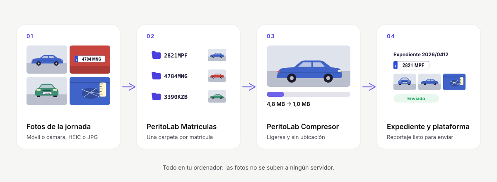

Las fotos de cada vehículo, en su carpeta. Solas.
PeritoLab lee la matrícula de cada foto, separa la jornada por coche y prepara el reportaje en PDF. Todo en tu ordenador: ninguna foto sale de él.
Windows 10 y 11 · sin tarjeta · procesado local
Jornada 21 oct · 46 coches · 1.284 fotos
Un mismo motor, pensado para tu forma de trabajar
El reportaje, listo para el expediente
Una carpeta por matrícula, las fotos renombradas, el informe en PDF con tus plantillas y la actividad de todo el gabinete.
Ver PeritoLab Matrículas → Talleres · programa pilotoRecepción con fotos que te defienden
Las fotos del móvil pasan al ordenador del taller, se ordenan por matrícula y, en el piloto, salen en una hoja de recepción que firma el cliente.
Ver el piloto para talleres → Tramitadores y flotasEntregas y devoluciones sin discusiones
Las fotos de entrega y recogida, separadas por vehículo y fáciles de encontrar por su matrícula meses después.
Hablar con nosotros →De la tarjeta al expediente, en tres pasos
Sigues fotografiando como siempre. PeritoLab hace lo que viene después, sin que las fotos salgan de tu ordenador.
- 01
Arrastra la carpeta de la jornada
Desde la tarjeta o el móvil (también por la wifi, con un código QR): JPG, HEIC del iPhone o PNG, con todas sus subcarpetas.
- 02
Revisa solo lo dudoso
Cada coche aparece con su matrícula. Las lecturas no concluyentes vienen marcadas: la última palabra es tuya.
- 03
Listo para el expediente
Una carpeta por matrícula, las fotos renombradas y, si quieres, el reportaje en PDF con tu logotipo.

Tres programas, un mismo criterio técnico
Procesado local, originales intactos y resultados que puedes comprobar.
Matrículas
30 días gratisClasifica la jornada por matrícula y crea el reportaje fotográfico en PDF. Para peritos, gabinetes y talleres.
Compresor
GratisHasta un 80 % menos de peso, un tamaño máximo por foto, sin GPS y de HEIC a JPG, para cualquier portal de aseguradora.
Conversor
GratisDe HEIC a JPG, PNG, WebP o TIFF, o un PDF por carpeta, sin subir las fotos a internet. Conserva la fecha de cada foto.
Tus fotos no salen de tu ordenador
Las matrículas se leen en tu equipo, sin conexión. No subimos fotos, matrículas ni datos de asegurados, lo que simplifica tus obligaciones de protección de datos.
- Procesado 100 % localEl reconocimiento funciona sin conexión.
- Originales intactosSiempre se trabaja sobre una copia.
- Cadena de custodiaEl informe puede incluir la huella SHA-256 de cada foto.
- Sin permanenciaPago mensual o anual; cambias de plan o te das de baja cuando quieras.
Nació en un gabinete pericial: GPFIAL, dos años de fotos reales
GPFIAL S.L.P., un gabinete de Canarias, probó la aplicación con su propio archivo de 2025 y 2026, tal como salió de los móviles y de las cámaras. Lo que no está claro no se adivina: se marca para revisarlo.
Leer el caso completo →Por empresa, no por persona
El plan va por ordenadores, no por peritos. 30 días gratis con todo y sin permanencia.
Básico
Perito independiente
o 289,95 € al año
- 1 ordenador
- Todas las funciones
- Reportaje fotográfico en PDF
Equipo
Gabinete pequeño
o 639,95 € al año
- 3 ordenadores
- Actividad de todo el equipo
- Todas las funciones
Empresa
Gabinete con varias sedes
o 1.289,95 € al año
- 8 ordenadores
- Actividad de todo el equipo
- Todas las funciones
Ilimitado
Redes periciales y grandes gabinetes
o 1.989,95 € al año
- Ordenadores sin límite
- Actividad de todo el equipo
- Todas las funciones
Precios finales con impuestos incluidos y sin permanencia. Empiezas con la prueba de 30 días, con todas las funciones y sin tarjeta; cuando decidas, contratas el plan desde la propia aplicación, con pago seguro con Stripe. El Compresor y el Conversor son siempre gratis.
Lo que más tiempo quita con las fotos, explicado
 Guía
GuíaCaso real: cómo GPFIAL organiza miles de fotos de peritaje al año
Cómo un gabinete pericial de Canarias organiza miles de fotos al año: 56.963 fotos reales de 1.866 vehículos, más del 99 % en su carpeta.
GuíaPrograma para las fotos del peritaje: qué mirar antes de elegirlo
Cuánto tiempo te cuesta separar las fotos a mano y qué comprobar en un programa para el peritaje: fotos en local, revisión de dudas, originales y PDF.
 Guía
GuíaQué fotos hacer en un peritaje de automóvil: la lista completa
Lista de las fotos de un peritaje de automóvil: identificación, generales y de detalle, cómo fotografiar los daños para que se vean y qué conservar.
Clasifica la jornada de hoy antes de empezar el informe
Instala, arrastra la carpeta y comprueba el resultado con tus propias fotos. O pídenos una demo y te lo enseñamos en 15 minutos.
¿Dudas? Escríbenos a contacto.peritolab@gmail.com